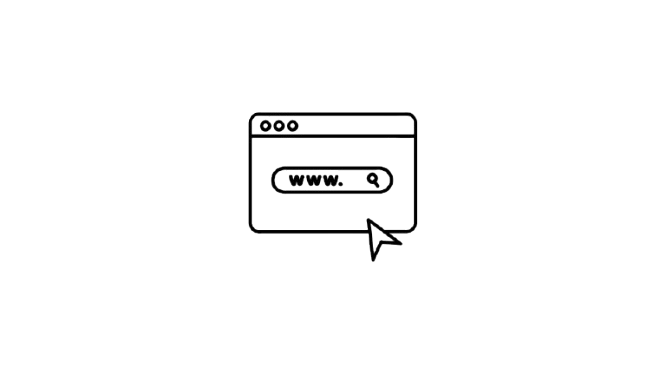
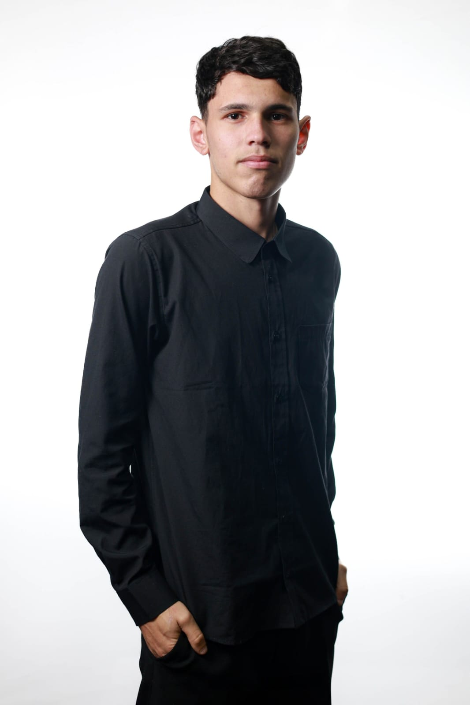
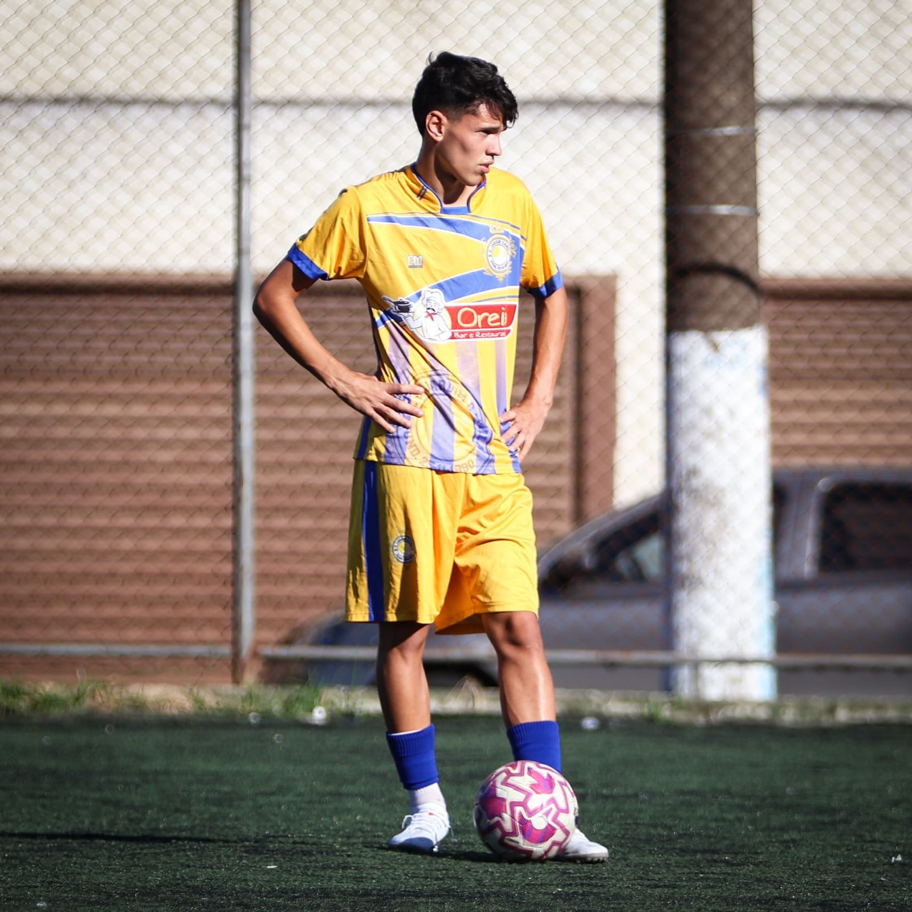

O FootStats é uma plataforma criada para aproximar o futebol das estatísticas, permitindo que os torcedores acompanhem o desempenho de seus times e jogadores favoritos por meio de dados e análises.
Apresentar estatísticas organizadas e informações confiáveis para proporcionar uma análise mais clara do desempenho de times e jogadores.
Tornar os dados do futebol fáceis de consultar e compreender, permitindo que qualquer torcedor explore estatísticas sem dificuldades.
Valorizar o interesse dos torcedores pelo esporte, oferecendo informações sobre seus times e jogadores favoritos.

Minha trajetória atual

Minha trajetória no futebol
O futebol faz parte da minha vida desde a infância. Cresci jogando em escolinhas de futebol e, aos 11 anos, comecei minha trajetória em clubes de futsal e futebol de campo, sempre buscando realizar o sonho de me tornar jogador profissional.
Durante essa jornada, conheci diversos estados do Brasil e, entre os 15 e 17 anos, morei em alojamentos de clubes, longe da minha família. Essa experiência me proporcionou amadurecimento, independência e aprendizados que levo comigo até hoje.
Com o passar dos anos, decidi seguir um novo caminho e ingressei na SPTech. Escolhi o futebol como tema do FootStats porque sempre gostei de analisar estatísticas de times e jogadores, unindo minha paixão pelo esporte ao interesse por matemática e tecnologia.